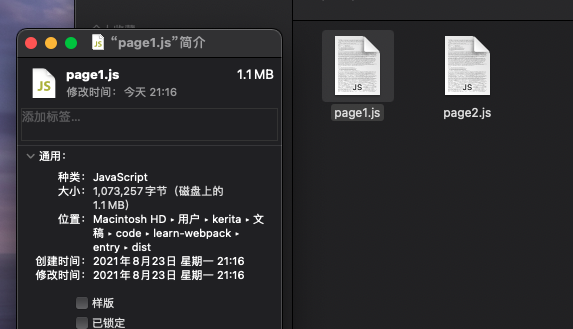
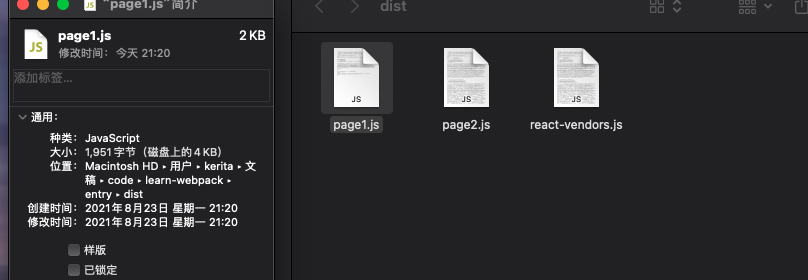

entry 是 webpack 打包项目的入口，可配置打包单个文件或者文件，可使用 dependOn 与其他 入口 chunk 共享模块。
以下大部分例子可参考这个项目的 entry 工程。
默认 entry
webpack 4 之后，为了简化配置，其 entry 值默认为 ./src/index.js，此路径是相当于 webpack 配置文件。
同时其 output 值为 ./dist/main.js
entry 使用字符串或者字符串数组配置
当使用字符串或者字符串数组进行配置时，由于其默认 output 名称都为 main.js，若存在多个入口文件，则都会打包在一起成为 main.js 文件。
1 | entry: ["./src/page1.js", "./src/page2.js"], |
entry 使用对象进行配置，对象的 key 将作为文件名
1 | entry: { |
打包后将生成文件：
1 | ./dist/page1.js |
dependOn 配置 chunk 共享模块
在 page1 和 page2 都没有配置使用 dependOn，但它们都 import 了 react, react-dom, prop-types，此时 page1 和 page2 打包后体积皆为 1.1 MB。

当对 page1 配置 dependOn，page2 不配置时，page1 打包后文件变为 4KB，而 page2 因为没有什么改变，依旧为 1.1 MB。
1 | entry: { |

动态 entry
entry 支持配置为函数，如果返回的是 Promise，则应该 resolve entry 入口。
1 | module.exports = { |